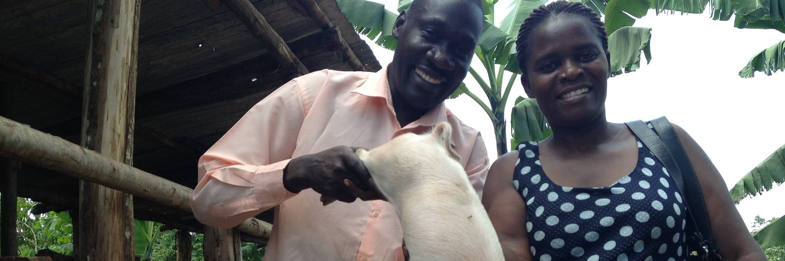
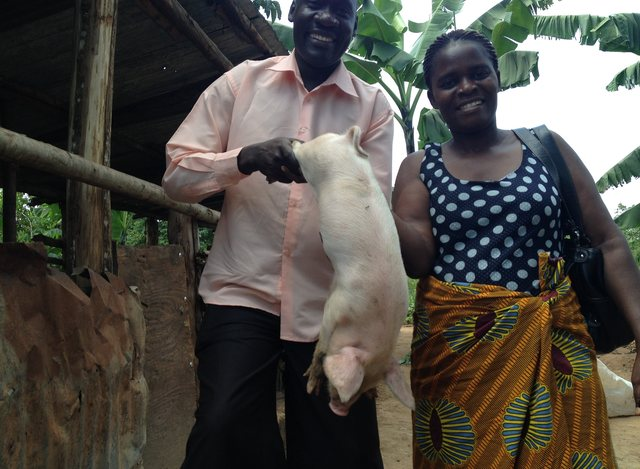
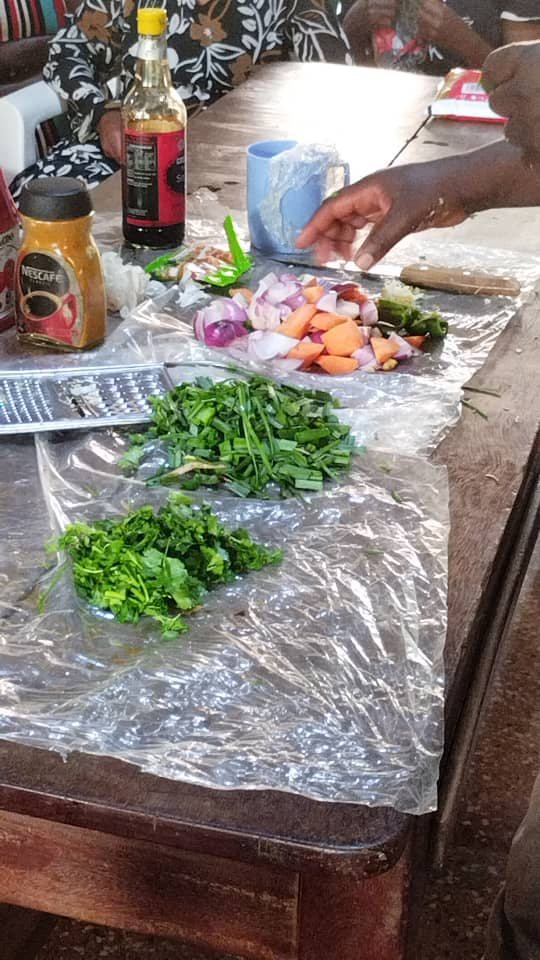
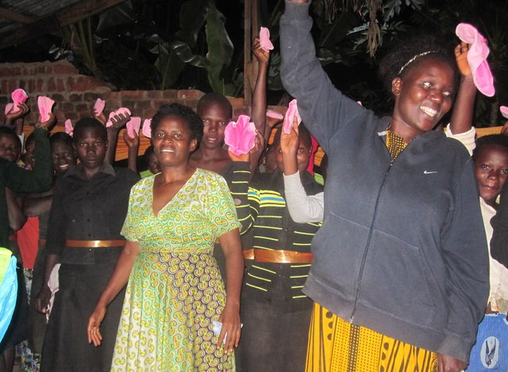
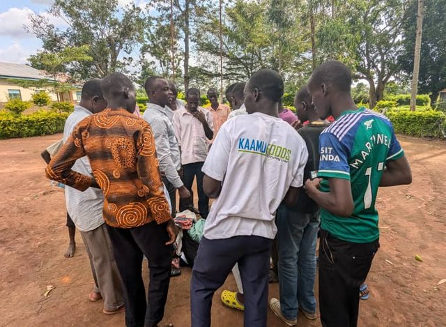
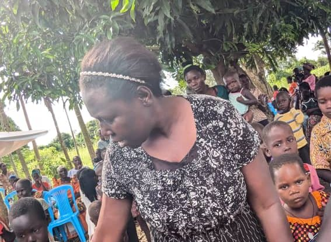

Skills that pay, health that's protected, childhoods full of rhythm, and communities that show up for each other.

We teach trades that turn into real, sustainable income: cooking and catering for events and daily meals, piggery for households ready to start small-scale farming, and liquid soap-making, one of our most requested and profitable skills. Every trainee graduates with starter tools and a plan to launch or grow her own business.

From home meals to full event catering, a trade with year-round demand in Kasangati and beyond.

Starter piglets, feed guidance and pen-building basics to launch a small livestock business.

Low start-up cost, high local demand, one of our fastest-growing income streams for graduates.

Simple bookkeeping, pricing and group-savings training so income turns into stability.

No girl should miss school because of her period, and no woman should feel alone facing abuse. We distribute free sanitary pads with menstrual health education in local schools, and run safe-space circles where domestic violence awareness is taught openly, helping women recognise warning signs, know their rights, and find support without shame.

Monthly supply drives to local schools, keeping girls confident and present in class.

Community dialogues that name abuse clearly and connect survivors to real support.

Confidential peer-support groups led by women who understand the journey firsthand.

Direct connections to legal aid and protection services when a woman needs to act fast.

Children of the women we train grow up inside Turikumwe too. Beyond school-fee and mentorship support, our children's dance troupe rehearses weekly and performs traditional and contemporary routines at weddings, fundraisers and community events, building confidence, discipline and a joyful sense of belonging that carries into every other part of their lives.

We go where the need is, home visits for families in crisis, savings-group formation so women pool resources together, and emergency humanitarian support during hardship. This is the glue that holds every other program together: showing up, consistently, for the whole community.
Sponsor a skill kit, fund a pad drive, or simply come watch the children dance. Every door leads to the same place, together.